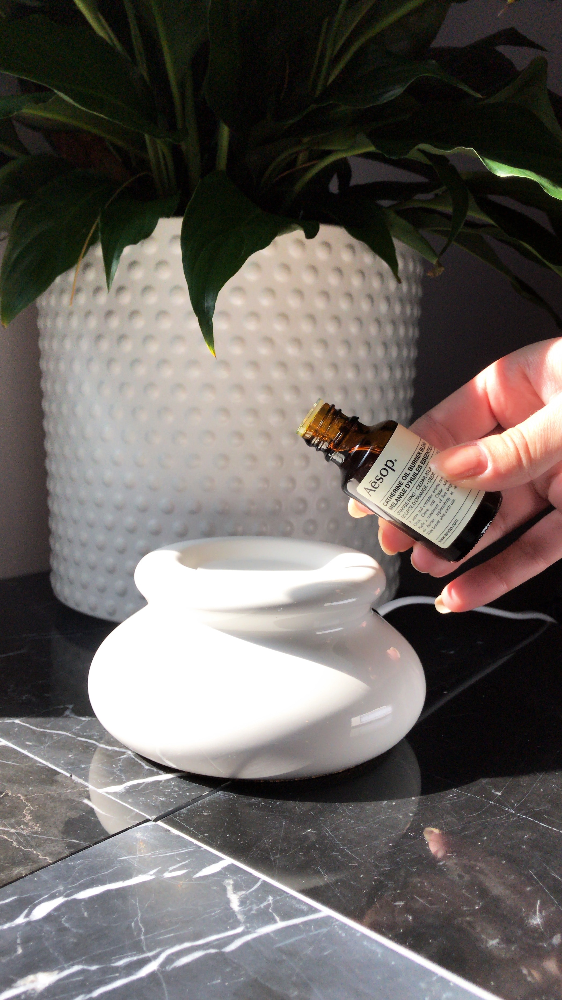

Simple, easy, and inexpensive homemade version of commercial reed diffusers.
In a glass measuring cup, add 1/4 cup of your carrier oil or 1/3 cup distilled water. Add about 25-30 drops of essential oils Add the alcohol and stir thoroughly to help it bind with the oils. Be sure to keep stirring until it's all incorporated well. Add the mixture to your jar. Insert the sticks into the jar. After a few hours, flip the sticks over and insert the dry end into the jar to saturate the other end. Continue to swirl the jar and flip the sticks over about every week or so until the scent has diminished. Then, you can just add some more essential oils to the mix, swirl, and start again!
Once the sticks become completely saturated with oil, they lose the ability to diffuse and will need to be replaced. If your liquid starts to look or smell "off", dump it out, wash the jar, and make a new batch.